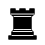

Партия четырёх коней (Four Knights Game)
C46–C49 · За белых
Надёжный классический дебют: сначала выходят все четыре коня.



Основная линия
- 1. e4 — Центр.
- e5 — Ответ.
- 2. Nf3 — Нападение на e5.
- Nc6 — Защита.
- 3. Nc3 — Развитие.
- Nf6 — Четыре коня на доске.
- 4. Bb5 — Испанский вариант.
- Bb4 — Чёрные отвечают зеркально.
- 5. O-O — Рокировка.
- O-O — Рокировка.
- 6. d3 — Укрепляем e4.
- d6 — Симметричная равная позиция.
Four Knights Game
A solid, classical opening where all four knights come out first.
Open the interactive lesson →The main line
- 1. e4 — Centre.
- e5 — Reply.
- 2. Nf3 — Attack on e5.
- Nc6 — Defence.
- 3. Nc3 — Development.
- Nf6 — Four knights on the board.
- 4. Bb5 — The Spanish Four Knights.
- Bb4 — Black mirrors.
- 5. O-O — Castling.
- O-O — Castling.
- 6. d3 — Supporting e4.
- d6 — A symmetrical, balanced position.